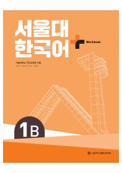

SKSeul Milliy Universitetining koreys tili 1B darajasi uchun amaliy ishchi daftar.
Ushbu ishchi daftar Seul Milliy Universitetining koreys tili o'quv dasturi doirasida 1B darajasi uchun mo'ljallangan qo'shimcha o'quv qo'llanmasidir. Kitob o'quvchilarga lug'at va grammatikani amaliy mashqlar, TOPIK uslubidagi topshiriqlar hamda tinglash, o'qish va yozish ko'nikmalarini rivojlantirish orqali mustahkamlashga yordam beradi.